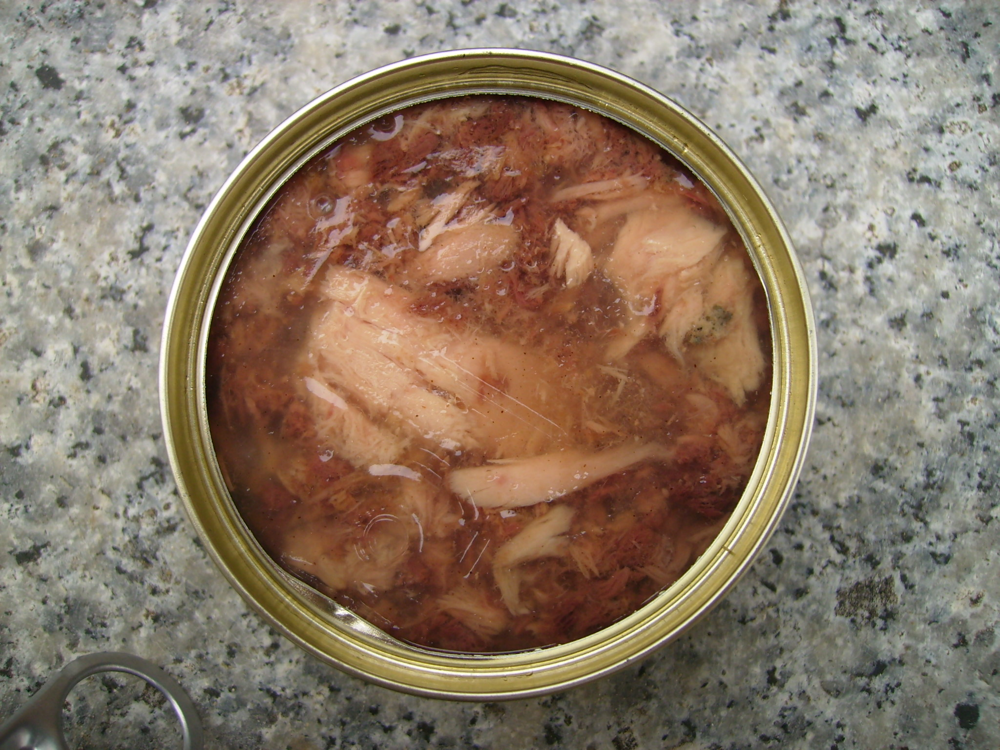

Lucky
the Cat
Here are some of
Lucky's
favorite
activities:
Going outside
Scratching his scratching post
Sitting close to heating vents
Playing with his catnip toy
Lucky's
favorite
foods include:
Fish
Beef
Wet cat food
Learn more about cats:
Cat Time (Cat Breed Database)
Oregon Humane Society